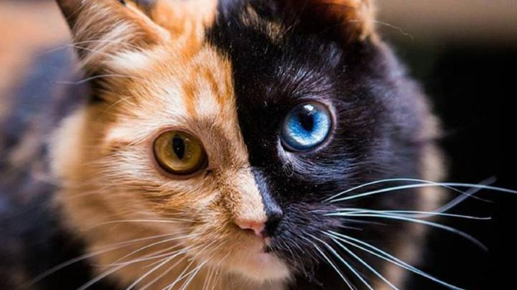
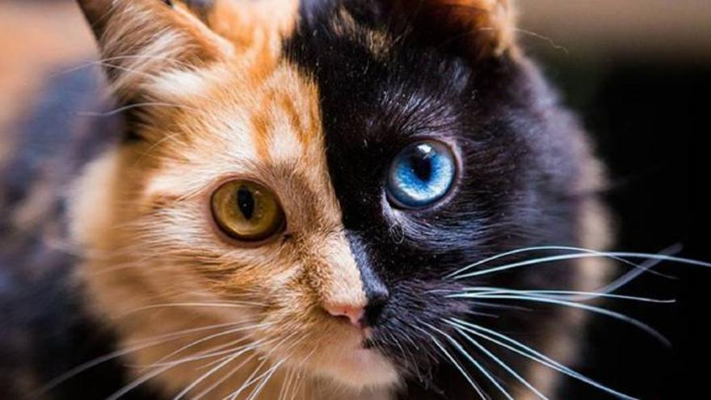

¿Busca una cínica veterinaria en la que pueda confiar?
 


veterinaria 24 horas
Somos un hospital veterinario, y permanecemos abiertos las 24 horas del día atendemos cualquier tipo de emergencia

Somos un gran equipo
Tenemos un gran equipo de trabajo, eso nos permite avanzar y finalizar más rápido cualquier tipo de emergencia que se presente en nuestra veterinaria
Consulta veterinaria
En nuestro hospital puedes hacer tus consultas sobre cualquier tema de tus mascotas.

Limpieza dental
Cuidamos la higiene dental de tus mascotas, eso evitará bacterias en tus amigos y manendrá un buen aliento.
Cirugías veterinarias
Atendemos con profesionales cualquier emergencia que se presente y así realizar excelentes trabajos.

Endoscopía
Realizamos examen visual de las cavidades o los conductos internos del tu mascotas mediante un endoscopio

Laboratorios
En estos espacios, las condiciones ambientales se controlan y se normalizan para evitar que se produzcan influencias extrañas
Farmacia veterinaria
Contamos con amplia variedad de medicamentos para todas las especies, realizamos un estudio antes de recetar.
Nuestros clientes nos recomiendan